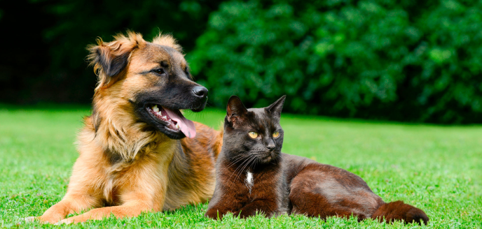
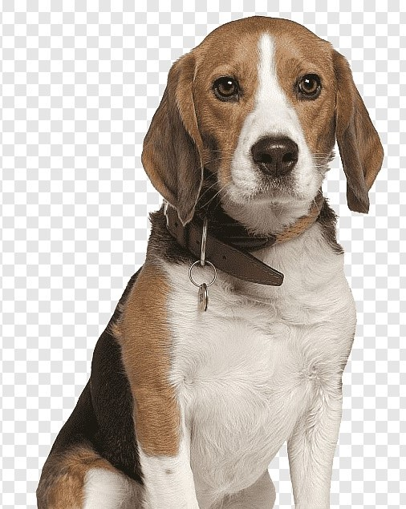

Prefeitura de Linhares tem agora uma seção específica em seu site oficial para adoção de animais que estavam abandonados e são resgatados pela Prefeitura.

Mais uma açao na luta pela causa e proteção animal.
A iniciativa é fruto de uma parceria entre a Secretaria de Desenvolvimento Sustentável, através do Departamento
do Meio Ambiente, e da Secretaria de Governo e Relações Institucionais, através do Departamento de Comunicação e
Gestão Estratégica.
Trata-se de uma maneira prática de divulgar constantemente os animais disponíveis para adoção, sempre com fotos e uma breve descrição.
Pagina está disponível no setor Serviço aos Cidadão, quase no rodapé do site, através do ícone “Adoção de cães e gatos”. Você pode também acessar diretamente pelo link: • Instagram da Prefeitura de Linhares
